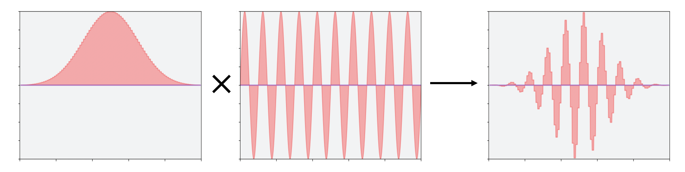

নোট
এই পৃষ্ঠাটি tutorials/circuits_advanced/1_advanced_circuits.ipynb থেকে উৎপন্ন হয়েছে।
পালস সময়সূচী তৈরির পদ্ধতি¶
তড়িৎস্পন্দন বা পালস একটি বর্তনী (সার্কিট) যুক্তিবর্তনী (গেইট) জন্য একটি মৌলিক স্তরের, সঠিক উপস্থাপনা সংজ্ঞায়িত করে | একটি একক ক্রিয়াকলাপ (অপারেশন) একটি তড়িৎস্পন্দন বা তড়িৎস্পন্দন বা পালস নির্দেশমালার সাথে বাস্তবায়ন করা যেতে পারে, যা একাধিক মৌলিক স্তরের নির্দেশাবলী নিয়ে গঠিত। তড়িৎস্পন্দন বা তড়িৎস্পন্দন বা পালস গেট সম্পর্কে আরও জানতে, প্রদর্শক (ডকুমেন্টেশন) ফিরে যান এখানে <05_pulse_gates.ipynb> __। এই পৃষ্ঠাটি কীভাবে তড়িৎস্পন্দন বা পালস নির্দেশমালা তৈরি করতে হয় তা বিশদ করে।
টীকা: আই. বি. এম এর যন্ত্রের জন্য, তড়িৎস্পন্দন বা পালস নির্দেশমালা গেট বর্ণনা করার জন্য সাবরুটিন হিসাবে ব্যবহৃত হয়। পূর্বে, কিছু যন্ত্রের এই বিন্যাসে সম্পূর্ণ প্রোগ্রামগুলো গ্রহণ করাছিল, কিন্তু এটি 2021 সালের ডিসেম্বরে বন্ধ হচ্ছে। অন্যান্য প্রোভাইডার এখনও এই বিন্যাসে সম্পূর্ণ প্রোগ্রাম গ্রহণ করতে পারে। প্রোগ্রামটি যেভাবেই ব্যবহার করা হোক না কেন, প্রোগ্রাম তৈরির গঠন (সিনট্যাক্স) একই। কিভাবে জানতে পড়ুন!
তড়িৎস্পন্দন বা পালস নির্দেশমালা , যাকে Schedules বলা হয়, নিয়ন্ত্রণ ইলেকট্রনিক্সের জন্য নির্দেশ ক্রম বর্ণনা করে। আমরা তড়িৎস্পন্দন বা পালস নির্মাতা ব্যবহার করে Schedules তৈরি করি। একটি Schedule শুরু করা সহজ:
[1]:
from qiskit import pulse
with pulse.build(name='my_example') as my_program:
# Add instructions here
pass
my_program
[1]:
Schedule(, name="my_example")
আপনি দেখতে পারেন যে এখনও কোন নির্দেশনা নেই। এই পৃষ্ঠার পরবর্তী অংশটি আপনি যে সময়সূচীতে যোগ করতে পারেন তার প্রতিটি নির্দেশাবলী ব্যাখ্যা করবে এবং শেষ অংশটি বিভিন্ন alignment contexts বর্ণনা করবে, যা নির্দেশ করে কিভাবে একে অপরের আপেক্ষিক সময়ে নির্দেশাবলী স্থাপন করা হয়।
Schedule নির্দেশনা¶
প্রতিটি নির্দেশনা ধরনের নিজস্ব অপারেন্ড গুচ্ছ আছে। আপনি উপরে দেখতে পাচ্ছেন, নির্দেশাবলী কোথায় প্রয়োগ করা হবে তা নির্দিষ্ট করার জন্য তাদের প্রতিটিতে কমপক্ষে একটি Channel অন্তর্ভুক্ত রয়েছে।
চ্যানেল হল নিয়ন্ত্রণ যন্ত্র থেকে কোয়ান্টাম চিপ পর্যন্ত সিগন্যাল লাইনের নাম (লেবেল)।
DriveChannelগুলি সাধারণত একক কিউবিট ঘূর্ণনের * ড্রাইভিং * এর জন্য ব্যবহৃত হয়,ControlChannelগুলি সাধারণত মাল্টি-কিউবিট গেট বা টিউনেবল (tunable)কিউবিটগুলির অতিরিক্ত ড্রাইভ লাইনের জন্য ব্যবহৃত হয়,MeasureChannelগুলি পালস প্রেরণের জন্য নির্দিষ্ট যা রিড-আউটকে উদ্দীপিত করে, এবংডিজিটাইজারগুলিকে ট্রিগার করতে
AcquireChannelগুলি ব্যবহার করা হয় যা রিড-আউট সিগন্যাল সংগ্রহ করে।
DriveChannel, ControlChannel, এবং MeasureChannelগুলি সব PulseChannel; এর মানে হল যে তারা * পালস প্রেরণ * সমর্থন করে, যেখানে AcquireChannel শুধুমাত্র একটি রিসিভ চ্যানেল এবং তরঙ্গরূপ চালাতে পারে না।
নিম্নলিখিত উদাহরণগুলির জন্য, আমরা প্রতিটি Instruction এর জন্য একটি DriveChannel উদাহরণ তৈরি করব যা একটি PulseChannel গ্রহণ করে। চ্যানেলগুলি একটি পূর্ণসংখ্যা index আর্গুমেন্ট নেয়। ControlChannelগুলি ছাড়া, সূচকটি ট্রিভিয়ালি কিউবিট লেবেলে ম্যাপ করে।
[2]:
from qiskit.pulse import DriveChannel
channel = DriveChannel(0)
পালস Schedule যে ব্যাকএন্ড এর উপর চলে তার থেকে স্বাধীন। যাইহোক, আমরা একটি প্রেক্ষাপটে আমাদের প্রোগ্রাম তৈরি করতে পারি যা pulse.build এ সরবরাহ করার দ্বারা টার্গেট ব্যাকএন্ড সম্বন্ধে অবগত হয়। সম্ভব হলে আপনার একটি ব্যাকএন্ড সরবরাহ করা উচিত। চ্যানেল অ্যাক্সেসর pulse.<type>_channel(<idx>) ব্যবহার করে আমরা নিশ্চিত করতে পারি যে আমরা কেবল উপলব্ধ ডিভাইস রিসোর্স ব্যবহার করছি।
[3]:
from qiskit.test.mock import FakeValencia
backend = FakeValencia()
with pulse.build(backend=backend, name='backend_aware') as backend_aware_program:
channel = pulse.drive_channel(0)
print(pulse.num_qubits())
# Raises an error as backend only has 5 qubits
#pulse.drive_channel(100)
5
delay¶
অন্যতম সহজ একটি নির্দেশনা আমরা তৈরী করতে পারি যা হলো delay। এটি একটি ব্লকিং নির্দেশ যা নির্দিষ্ট ইলেকট্রনিক্সকে নির্দিষ্ট সময়ের জন্য প্রদত্ত চ্যানেলে কোন সংকেত আউটপুট করতে বলে না। এটি অন্যান্য নির্দেশাবলীর সময় নিয়ন্ত্রণের জন্য দরকারী।
এখানে এবং অন্য কোথাও সময়কাল ব্যাকএন্ডের চক্রের সময় অনুসারে (1 / sample rate), dt। এটি অবশ্যই একটি পূর্ণসংখ্যার মান নিতে হবে।
একটি delay নির্দেশ যোগ করার জন্য, আমরা একটি সময়কাল এবং একটি চ্যানেল পাস করি, যেখানে channel, AcquireChannel সহ যেকোনো ধরনের চ্যানেল হতে পারে। আমরা একটি পালস বিল্ডার প্রসঙ্গ শুরু করতে pulse.build ব্যবহার করি। যা স্বয়ংক্রিয়ভাবে আমাদের বিলম্বকে সময়সূচী delay_5dt তে নির্ধারণ করে।
[4]:
with pulse.build(backend) as delay_5dt:
pulse.delay(5, channel)
এখানেই এটার সমাপ্তি। এই চ্যানেলে এই বিলম্বের পরে যোগ করা যেকোনো নির্দেশ এই বিলম্ব ছাড়াই পাঁচটি টাইমস্টেপ পরে কার্যকর হবে।
play¶
play নির্দেশনা pulses চালানোর জন্য দায়ী। play নির্দেশ যোগ করা সহজ:
with pulse.build() as sched:
pulse.play(pulse, channel)
আসুন pulse যুক্তিটি কী তা ব্যাখ্যা করি এবং একটি তৈরি করার কয়েকটি ভিন্ন উপায় অন্বেষণ করি।
তড়িৎস্পন্দন বা পালস¶
একটি Pulse একটি ইচ্ছাধীন পালস envelope নির্দিষ্ট করে। আউটপুট ওয়েভফর্মের ফেজ এবং মড্যুলেশন ফ্রিকোয়েন্সি যথাক্রমে set_frequency এবং shift_phase নির্দেশাবলী দ্বারা নিয়ন্ত্রিত হয়, যা আমরা পরবর্তীতে কভার করবো।
নীচের ছবিটি কেন সেগুলি আলাদাভাবে নির্দিষ্ট করা হয়েছে তার জন্য কিছু অন্তর্দৃষ্টি প্রদান করতে পারে। পালসগুলির কথা চিন্তা করুন যা তাদের আচ্ছাদনগুলিকে একটি নির্বিচার তরঙ্গাকৃতি জেনারেটরের (arbitrary waveform generator - AWG) ইনপুট হিসাবে বর্ণনা করে, একটি সাধারণ ল্যাব যন্ত্র - এটি বাম ছবিতে দেখানো হয়েছে। লক্ষ্য করুন সীমিত নমুনা হার সংকেতকে অস্বীকার করে। AWG দ্বারা উত্পাদিত সংকেত একটি ক্রমাগত সাইন ওয়েভ জেনারেটরের সাথে মিশে যেতে পারে। এর আউটপুটের ফ্রিকোয়েন্সি সাইন ওয়েভ জেনারেটরের নির্দেশ দ্বারা নিয়ন্ত্রিত হয়; মাঝের ছবিটি দেখুন। অবশেষে, কিউবিটে পাঠানো সংকেতটি নীচের চিত্রের ডান দিক দিয়ে প্রদর্শিত হয়।
** দ্রষ্টব্য **: হার্ডওয়্যার অন্যান্য উপায়েও প্রয়োগ করা যেতে পারে, কিন্তু যদি আমরা নির্দেশাবলী গুলি আলাদা রাখি, তাহলে আমরা স্পষ্ট তথ্য হারানো এড়াতে পারি , যেমন মড্যুলেশন ফ্রিকোয়েন্সিটির মান।

তড়িৎস্পন্দন বা পালস তৈরির জন্য আমাদের কাছে অনেক পদ্ধতি রয়েছে। Qiskit তড়িৎস্পন্দন বা পালসের মধ্যে আমাদের library এর মধ্যে ``Pulse``নির্মাণের জন্য সহায়ক পদ্ধতি রয়েছে। উদাহরণস্বরূপ একটি সাধারণ গাউসিয়ান তড়িৎস্পন্দন বা পালস ধরা যাক - একটি পালস যার আচ্ছাদন একটি নমুনাযুক্ত গাউসিয়ান ফাংশন দ্বারা বর্ণিত। আমরা নির্বিচারে 1 এর একটি প্রশস্ততা, আদর্শ বিচ্যুতি: \(\sigma\) 10 এবং 128 টি নমুনা পয়েন্ট নির্বাচন করি।
টীকা: প্রশস্ততার মান নির্বিচারে 1.0 এর মধ্যে সীমাবদ্ধ। প্রতিটি ব্যাকএন্ড সিস্টেম আরও সীমাবদ্ধতা আরোপ করতে পারে - উদাহরণস্বরূপ, 64 এর ন্যূনতম পালস আকার। যদি এই অতিরিক্ত সীমাবদ্ধতা পাওয়া যায়, BackendConfiguration এর মাধ্যমে প্রদান করা হবে যা <08_gathering_system_information.ipynb#Configuration> -এ বর্ণনা করা হয়েছে ।
[5]:
from qiskit.pulse import library
amp = 1
sigma = 10
num_samples = 128
পরামিতিক তড়িৎস্পন্দন বা পালস¶
আসুন গাউসিয়ান প্যারামেট্রিক তড়িৎস্পন্দন বা পালস ব্যবহার করে আমাদের গাউসিয়ান পালস তৈরি করি। একটি প্যারামেট্রিক পালস প্রতিটি স্বতন্ত্র নমুনার পরিবর্তে ব্যাকএন্ডে ফাংশনের নাম এবং এর প্যারামিটার পাঠায়। প্যারামেট্রিক তড়িৎস্পন্দন বা পালস ব্যবহার করে আপনি ব্যাকএন্ডে পাঠানো কাজগুলিকে অনেক ছোট করে দেয়। আইবিএম কোয়ান্টাম ব্যাকএন্ডগুলি তাদের কাজের সর্বোচ্চ আকার সীমিত করে, তাই প্যারামেট্রিক তড়িৎস্পন্দন বা পালসগুলি আপনাকে বড় প্রোগ্রাম চালানোর অনুমতি দিতে পারে।
library এর অন্যান্য প্যারামেট্রিক পালসগুলির মধ্যে রয়েছে GaussianSquare, Drag এবং Constant।
** দ্রষ্টব্য **: প্যারামেট্রিক তড়িৎস্পন্দন বা পালসের নমুনা ঠিক কিভাবে নিতে হবে তা নির্ধারণের জন্য ব্যাকএন্ড দায়ী। প্যারামেট্রিক তড়িৎস্পন্দন বা পালস আঁকা সম্ভব, কিন্তু প্রদর্শিত নমুনাগুলি ব্যাকএন্ডে কার্যকর হওয়াগুলির সমান হওয়ার নিশ্চয়তা দেয় না।
[6]:
gaus = pulse.library.Gaussian(num_samples, amp, sigma,
name="Parametric Gaus")
gaus.draw()
[6]:
নমুনা দ্বারা বর্ণিত পালস ওভেফর্মস¶
একটি ওয়েভফর্ম হল একটি পালস সিগন্যাল যা সময়-নির্দেশিত জটিল পরিবর্ধন বা *নমুনা * এর একটি অ্যারে হিসাবে নির্দিষ্ট করা হয়। প্রতিটি নমুনা একটি চক্রের জন্য বাজানো হয়, একটি টাইমস্টেপ dt, ব্যাকএন্ড দ্বারা নির্ধারিত। যদি আমরা আমাদের প্রোগ্রামের রিয়েল-টাইম গতিবিদ্যা জানতে চাই, তাহলে আমাদের dt এর মান জানতে হবে। (শূন্য-সূচীকৃত) \(i^{th}\) নমুনাটি i*dt সময় থেকে (i + 1)*dt পর্যন্ত চলবে, যা কিউবিট ফ্রিকোয়েন্সি দ্বারা সংশোধন করা হবে।
[7]:
import numpy as np
times = np.arange(num_samples)
gaussian_samples = np.exp(-1/2 *((times - num_samples / 2) ** 2 / sigma**2))
gaus = library.Waveform(gaussian_samples, name="WF Gaus")
gaus.draw()
[7]:
তড়িৎস্পন্দন বা পালস লাইব্রেরি ফাংশন¶
আমাদের নিজস্ব পালস লাইব্রেরিতে সাধারণ ফাংশন থেকে Waveform তৈরির নমুনা পদ্ধতি রয়েছে।
[8]:
gaus = library.gaussian(duration=num_samples, amp=amp, sigma=sigma, name="Lib Gaus")
gaus.draw()
[8]:

আপনার pulse নির্দিষ্ট করার জন্য আপনি যে পদ্ধতিটি ব্যবহার করেন না কেন, play আপনার সময়সূচীতে একইভাবে যোগ করা হয়:
[9]:
with pulse.build() as schedule:
pulse.play(gaus, channel)
schedule.draw()
[9]:
আপনি একটি জটিল তালিকা বা অ্যারে সরাসরি play তে সরবরাহ করতে পারেন
[10]:
with pulse.build() as schedule:
pulse.play([0.001*i for i in range(160)], channel)
schedule.draw()
[10]:
প্লে নির্দেশটি তার পালস থেকে এর সময়কাল পায়: একটি প্যারামেট্রাইজড পালসের সময়কাল একটি স্পষ্ট আর্গুমেন্ট, এবং একটি ওয়েভফর্ম এর সময়কাল ইনপুট নমুনার সংখ্যা।
set_frequency¶
পূর্বে ব্যাখ্যা করা হয়েছে, আউটপুট পালস তরঙ্গাকৃতি আচ্ছাদন এছাড়াও একটি ফ্রিকোয়েন্সি এবং ফেজ দ্বারা সংশোধন করা হয়। প্রতিটি চ্যানেলের একটি default frequency listed in the backend.defaults() আছে।
একটি চ্যানেলের ফ্রিকোয়েন্সি set_frequency নির্দেশ দ্বারা একটি সময়সূচী এর মধ্যে যে কোন সময় আপডেট করা যেতে পারে। এটি একটি float ফ্রিকোয়েন্সি এবং একটি PulseChannel চ্যানেল ইনপুট হিসাবে নেয়। একটি set_frequency নির্দেশ অনুসরণ করে একটি চ্যানেলে সমস্ত তড়িৎস্পন্দন বা পালস প্রদত্ত ফ্রিকোয়েন্সি দ্বারা মড্যুলেট করা হবে যতক্ষণ না অন্য একটি set_frequency নির্দেশনা আসে অথবা প্রোগ্রাম শেষ না হওয়া পর্যন্ত।
নির্দেশটির 0 এর একটি অন্তর্নিহিত সময়কাল রয়েছে।
দ্রষ্টব্য: যে ফ্রিকোয়েন্সিগুলি অনুরোধ করা যেতে পারে তা মোট ব্যান্ডউইথ এবং প্রতিটি হার্ডওয়্যার চ্যানেলের তাৎক্ষণিক ব্যান্ডউইথ দ্বারা সীমাবদ্ধ। ভবিষ্যতে, এগুলি ব্যাকএন্ড দ্বারা রিপোর্ট করা হবে।
[11]:
with pulse.build(backend) as schedule:
pulse.set_frequency(4.5e9, channel)
shift_phase¶
Shift_phase নির্দেশ ফ্রিকোয়েন্সি মড্যুলেশন এর ফেজ phase দ্বারা বৃদ্ধি করবে। Set_frequency এর মত, এই ফেজ শিফট প্রোগ্রাম শেষ না হওয়া পর্যন্ত একই চ্যানেলে নিম্নলিখিত সমস্ত নির্দেশাবলীকে প্রভাবিত করবে। একটি shift_phase এর প্রভাব পূর্বাবস্থায় ফেরানোর জন্য, negative ফেজ একটি নতুন নির্দেশে প্রেরণ করা যেতে পারে।
Set_frequency এর মত, নির্দেশের 0 এর অন্তর্নিহিত সময়কাল রয়েছে।
[12]:
with pulse.build(backend) as schedule:
pulse.shift_phase(np.pi, channel)
acquire¶
acquire নির্দেশনাটি রিডআউট এর জন্য ডেটা অধিগ্রহণকে ট্রিগার করে। এটি একটি সময় নেয়, একটি AcquireChannel যা পরিমাপকৃত কিউবিট, এবং একটি MemorySlot বা RegisterSlot কে ম্যাপ করে। MemorySlot হল ক্লাসিক্যাল মেমরি যেখানে রিডআউট ফলাফল সংরক্ষণ করা হবে। RegisterSlot কন্ট্রোল ইলেকট্রনিক্সের একটি রেজিস্টারে ম্যাপ করে যা দ্রুত প্রতিক্রিয়া জানার জন্য রিডআউট ফলাফল সংরক্ষণ করে।
acquire নির্দেশাবলী কাস্টম Discriminators এবং Kernels গুলিকে কীওয়ার্ড আর্গুমেন্ট হিসাবে গ্রহণ করতে পারে।
[13]:
from qiskit.pulse import Acquire, AcquireChannel, MemorySlot
with pulse.build(backend) as schedule:
pulse.acquire(1200, pulse.acquire_channel(0), MemorySlot(0))
এখন যেহেতু আমরা Schedule নির্দেশাবলী কিভাবে যোগ করতে জানি, আসুন জেনে নিই কিভাবে সেগুলি চালালে ঠিকভাবে নিয়ন্ত্রণ করা যায়।
পালস বিল্ডার¶
এখানে, আমরা কিভাবে সময়সূচী তৈরি করতে হয় তা শেখার জন্য সর্বাধিক গুরুত্বপূর্ণ পালস বিল্ডার এর বৈশিষ্ট্যগুলি পুনরালোচনা করবো। এটি সম্পূর্ণ নয়; পালস বিল্ডার ব্যবহার করে আপনি কি করতে পারেন সে সম্পর্কে আরো বিস্তারিত জানার জন্য, Pulse API reference <https://qiskit.org/documentation/apidoc/pulse.html> দেখুন।
প্রান্তিককরণ প্রসঙ্গ¶
বিল্ডার এর সারিবদ্ধকরণ প্রসঙ্গ রয়েছে যা একটি সময়সূচী কীভাবে তৈরি হয় তা প্রভাবিত করে। প্রসঙ্গগুলিও বাসা বাঁধতে পারে। তাদের চেষ্টা করে দেখুন, এবং pulse গুলি কিভাবে একত্রিত হয় তা দেখতে ".draw ()" ব্যবহার করুন।
প্রান্তিককরণ প্রেক্ষাপট যাই হোক না কেন, সারিবদ্ধকরণের নিয়ম অনুসরণ করে এবং প্রতিটি নির্দেশনা সহ ফলাফলের সময়সূচী হবে যতটা সংক্ষিপ্ত সম্ভব। এটি এখনও "দীর্ঘতম পথ" থেকে নির্ধারিত নির্দেশাবলীর জন্য কিছু ডিগ্রী স্বাধীনতার অনুমতি দেয়। নীচের উদাহরণগুলি এটি আলোকিত করে।
align_left¶
বিল্ডার এর সারিবদ্ধকরণ প্রসঙ্গ রয়েছে যা একটি সময়সূচী কীভাবে তৈরি হয় তা প্রভাবিত করে। ডিফল্ট হল "align_left"।
[14]:
with pulse.build(backend, name='Left align example') as program:
with pulse.align_left():
gaussian_pulse = library.gaussian(100, 0.5, 20)
pulse.play(gaussian_pulse, pulse.drive_channel(0))
pulse.play(gaussian_pulse, pulse.drive_channel(1))
pulse.play(gaussian_pulse, pulse.drive_channel(1))
program.draw()
[14]:
লক্ষ্য করুন কিভাবে "D1" এ পালস গুলির জন্য কোন নির্ধারিত স্বাধীনতা নেই। প্রথম তরঙ্গের পরপরই দ্বিতীয় তরঙ্গরূপ শুরু হয়। সামগ্রিক সময়সূচির সময়কাল পরিবর্তন না করে "D0" এর পালসটি "t = 0" এবং "t = 100" এর মধ্যে যেকোনো সময় শুরু হতে পারে। "Align_left" প্রসঙ্গ এই পালসটির শুরুর সময়কে "t = 0" এ সেট করে। আপনি এটিকে একটি টেক্সট ডকুমেন্টের বাম-ন্যায্যতার মতো ভাবতে পারেন।
align_right¶
এটি আশ্চর্যজনক নয় যে align_right align_left এর বিপরীত কাজ করে। এটি D0 এ গাউসিয়ান পালস শুরু করতে উপরের উদাহরণে t = 100 নির্বাচন করবে। বাম এবং ডান কে কখনও কখনও যথাক্রমে "as soon as possible" এবং "as late as possible" সময়সূচী বলা হয়।
[15]:
with pulse.build(backend, name='Right align example') as program:
with pulse.align_right():
gaussian_pulse = library.gaussian(100, 0.5, 20)
pulse.play(gaussian_pulse, pulse.drive_channel(0))
pulse.play(gaussian_pulse, pulse.drive_channel(1))
pulse.play(gaussian_pulse, pulse.drive_channel(1))
program.draw()
[15]:
align_equispaced(duration)¶
যদি একটি নির্দিষ্ট ব্লকের সময়কাল জানা থাকে, আপনি প্রতিটি নির্দেশের মধ্যে একই সময়কাল বিলম্ব যুক্ত করতে align_equispaced ব্যবহার করতে পারেন।
[16]:
with pulse.build(backend, name='example') as program:
gaussian_pulse = library.gaussian(100, 0.5, 20)
with pulse.align_equispaced(2*gaussian_pulse.duration):
pulse.play(gaussian_pulse, pulse.drive_channel(0))
pulse.play(gaussian_pulse, pulse.drive_channel(1))
pulse.play(gaussian_pulse, pulse.drive_channel(1))
program.draw()
[16]:

align_sequential¶
এই প্রান্তিককরণ প্রসঙ্গ সমান্তরাল নির্দেশাবলী নির্ধারণ করে না। প্রতিটি নির্দেশ পূর্বে যোগ করা নির্দেশের শেষে শুরু হবে।
[17]:
with pulse.build(backend, name='example') as program:
with pulse.align_sequential():
gaussian_pulse = library.gaussian(100, 0.5, 20)
pulse.play(gaussian_pulse, pulse.drive_channel(0))
pulse.play(gaussian_pulse, pulse.drive_channel(1))
pulse.play(gaussian_pulse, pulse.drive_channel(1))
program.draw()
[17]:

ফেজ এবং ফ্রিকোয়েন্সি অফসেট¶
আমরা একটি চ্যানেলে আমাদের ফ্রিকোয়েন্সি বা পালস এর পর্যায়কে অস্থায়ীভাবে অফসেট করতে বিল্ডার এর সহায়তা নিতে পারি।
[18]:
with pulse.build(backend, name='Offset example') as program:
with pulse.phase_offset(3.14, pulse.drive_channel(0)):
pulse.play(gaussian_pulse, pulse.drive_channel(0))
with pulse.frequency_offset(10e6, pulse.drive_channel(0)):
pulse.play(gaussian_pulse, pulse.drive_channel(0))
program.draw()
[18]:
আরো জানার জন্য আমরা আপনাকে Pulse API reference দেখার জন্য উৎসাহিত করছি।
[19]:
import qiskit.tools.jupyter
%qiskit_version_table
%qiskit_copyright
Version Information
| Qiskit Software | Version |
|---|---|
| Qiskit | None |
| Terra | 0.17.0 |
| Aer | 0.8.0 |
| Ignis | 0.6.0 |
| Aqua | None |
| IBM Q Provider | None |
| System information | |
| Python | 3.8.8 (default, Feb 24 2021, 13:46:16) [Clang 10.0.0 ] |
| OS | Darwin |
| CPUs | 2 |
| Memory (Gb) | 12.0 |
| Wed Apr 07 10:55:37 2021 EDT | |
This code is a part of Qiskit
© Copyright IBM 2017, 2021.
This code is licensed under the Apache License, Version 2.0. You may
obtain a copy of this license in the LICENSE.txt file in the root directory
of this source tree or at http://www.apache.org/licenses/LICENSE-2.0.
Any modifications or derivative works of this code must retain this
copyright notice, and modified files need to carry a notice indicating
that they have been altered from the originals.